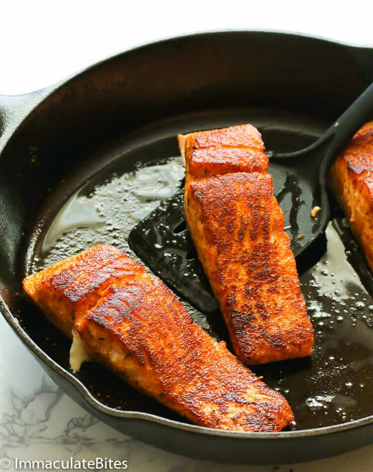

Easy Fried Salmon

Description
Really easy and really good fried salmon!
Ingredients
- kosher salt and ground black pepper
- 4 (5 ounce) center-cut salmon fillets
- 2 tablespoons olive oil
Steps
- Season samon with salt and black pepper.
- Heat olive oil in a nonstick skillet over medium-low heat.Place salmon skin-side up in the skillet.
- Cook until golden brown, about 4 minutes. Turn with a spatula and cook until salmon feels firm to the touch and skim is crisp, about 3 minutes more.